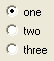

(choice [, choice ...], skip = 6, label = false, horz = false)
Creates a group of radio buttons, one for each choice.
skip can be used to change the standard space of 6 pixels between the horizontal alligned buttons.
If a label string is supplied, a GroupBox is drawn around the buttons with label set as the title.
If the horz argument is true then the buttons will be arranged horizonally instead of vertically.
Can be used in a RecordControl. Value is the current choice.
For example:
RadioButtonsControl("one", "two", "three")
will produce something like:
Note: If xmin or ymin is given and it exceeds the minimal dimensions of RadioButtons, the space between the buttons is stretched to fill xmin/ymin.
See also: CheckBoxControl, ComboBoxControl, RadioGroupsControl